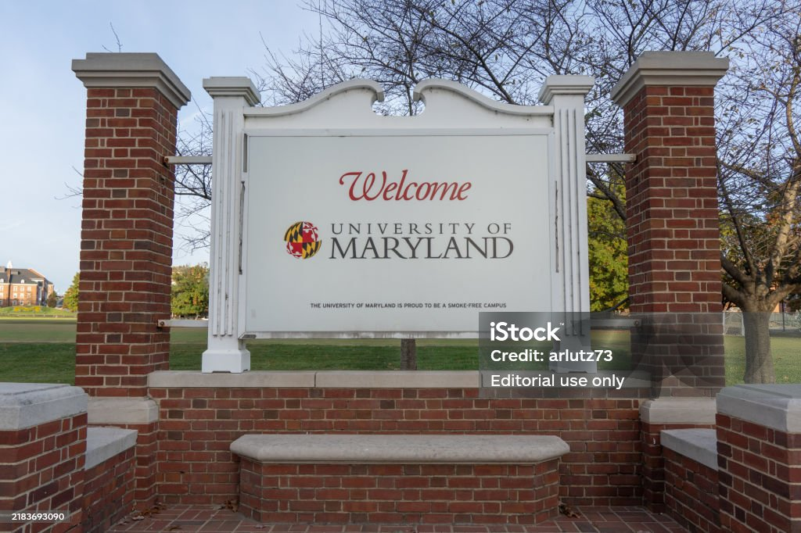

class="experience-image"
alt="laptop for digital editorial work"/>
class="experience-image"
alt="laptop for digital editorial work"/>
Wrote 4-8 articles a week covering Premier League and EFL fixtures incorporating statistics, xG analysis, as well as personal football knowledge to bring tactical insight. Delivered accurate, engaging sports content under tight 24-hour turnaround deadlines.
Wrote and published articles for the Listen In With KNN website, covering radio show summaries, local sports events, and professional sports press conferences. Used WordPress to format articles, insert links and images, and ensure content was ready for online publication. Uploaded finalized articles onto the Fox 5 News website while working fully remote.
Current Journalism undergraduate student at Phillip Merrill College, University of Maryland.
Graduation date: May 2027
